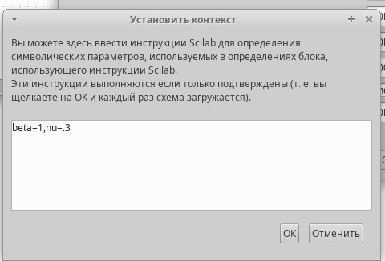
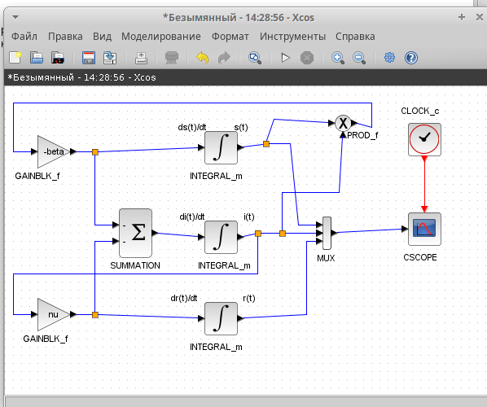
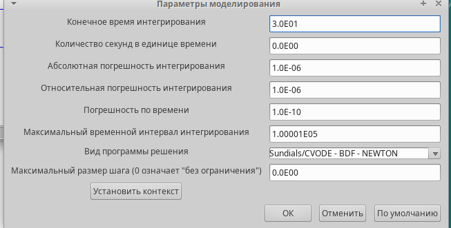
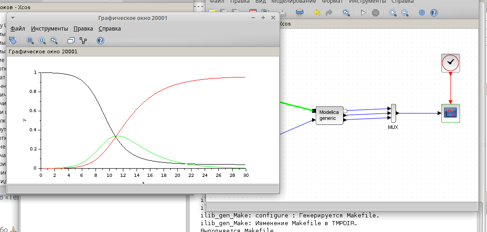
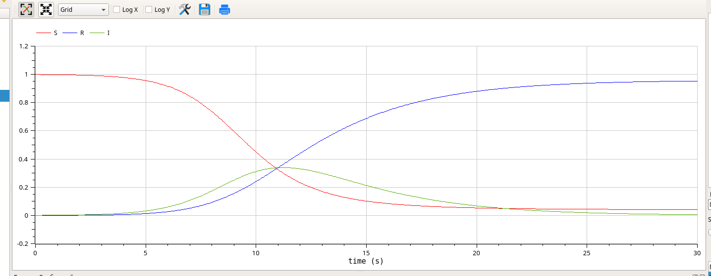
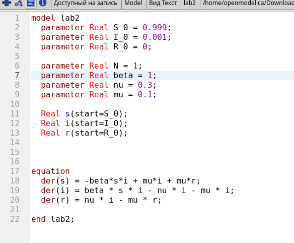

Построить модель SIR в xcos и OpenModelica.
Задача о распространении эпидемии описывается системой дифференциальных уравнений:
$$ \begin{aligned} \dot{s} &= -\beta s(t) i(t) \\ \dot{i} &= \beta s(t) i(t) - \nu i(t) \\ \dot{r} &= \nu i(t) \end{aligned} $$
где β – скорость заражения, ν– скорость выздоровления.
Зафиксируем начальные данные: β = 1, ν= 0.3, s(0)=0.999, i(0)=0.001, r(0)=0
В меню Моделирование, Установить контекст зададим значения переменных β и ν

Для реализации модели будем использовать следующие блоки:

В параметрах верхнего и среднего блока интегрирования необходимо задать начальные значения:

В меню Моделирование, Установка зададим конечное время интегрирования, равным времени моделирования, в данном случае 30

Результат моделирования представлен на рисунке

Готовая модель SIR представлена на рис Для реализации модели (5.1) с помощью языка Modelica помимо блоков CLOCK_c, CSCOPE, TEXT_f и MUX требуются блоки CONST_m — задаёт константу; MBLOCK (Modelica generic) — блок реализации кода на языке Modelica. Задаём значения переменных β и ν

Параметры блока Modelica:


В качестве упражнения нам надо построить модель SIR на OpenModelica.

задав конечное время 30 с, В результате получаем следующий график

Предположим, что в модели SIR учитываются демографические процессы, в частности, что смертность в популяции полностью уравновешивает рождаемость, а все рожденные индивидуумы появляются на свет абсолютно здоровыми. Тогда получим следующую систему уравнений:
$$ \begin{aligned} \dot{s} &= -\beta s(t) i(t) + \mu (N - s(t)) \\ \dot{i} &= \beta s(t) i(t) - \nu i(t) - \mu i(t) \\ \dot{r} &= \nu i(t) - \mu r(t) \end{aligned} $$
где μ — константа, которая равна коэффициенту смертности и рождаемости.
Pеализуем модель SIR с учетом демографических процессов в xcos с помощью блоков Modelica

В результате получаем следующий график

Реализуем модель SIR с учетом демографических процессов на OpenModelica.


В процессе выполнения данной лабораторной работы была построена модель SIR в xcos и OpenModelica.